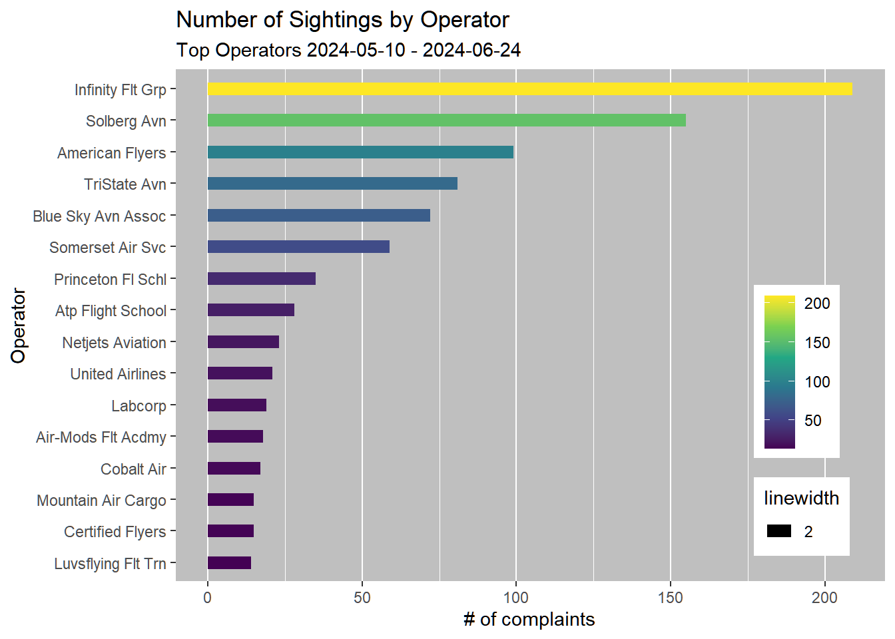
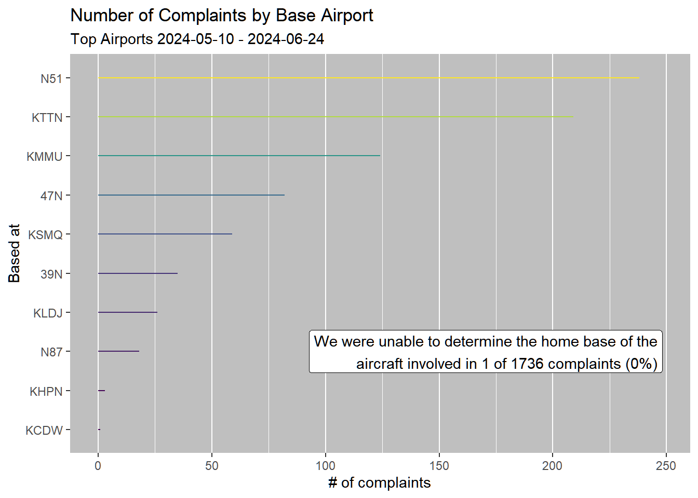
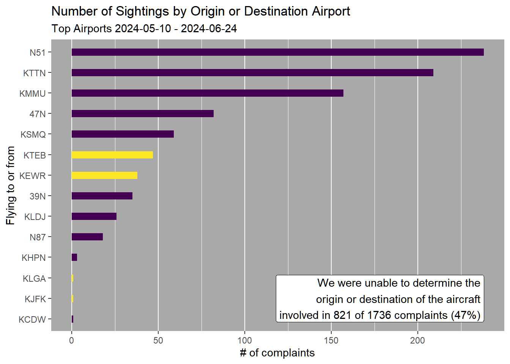

Aircraft Activity
Shiny Documents
This Quarto document is made interactive using Shiny. Interactive documents allow readers to modify parameters and see the results immediately. Learn more about Shiny interactive documents at https://quarto.org/docs/interactive/shiny/.
Inputs and Outputs
You can embed Shiny inputs and outputs in your document. Outputs are automatically updated whenever inputs change. This demonstrates how a standard R plot can be made interactive:
Set up environment
We rely on the tidyverse to work with our data and RCurl to get a current version of the FAA ownership database.
── Attaching core tidyverse packages ──────────────────────── tidyverse 2.0.0 ──
✔ dplyr 1.1.4 ✔ readr 2.1.5
✔ forcats 1.0.0 ✔ stringr 1.5.1
✔ ggplot2 3.5.1 ✔ tibble 3.2.1
✔ lubridate 1.9.3 ✔ tidyr 1.3.1
✔ purrr 1.0.2
── Conflicts ────────────────────────────────────────── tidyverse_conflicts() ──
✖ dplyr::filter() masks stats::filter()
✖ dplyr::lag() masks stats::lag()
ℹ Use the conflicted package (<http://conflicted.r-lib.org/>) to force all conflicts to become errors
Attaching package: 'RCurl'
The following object is masked from 'package:tidyr':
completeImport complaints from Airnoise.io
Export the complaint database from airnoise.io in CSV format. If it is zipped, it can remain so because readr::read_csv() handles that for us.
anCsvFilesPath must indicate the path at which the exported database has been saved (the example path is listed in a Windows-friendly format).
Rows: 1769 Columns: 17
── Column specification ────────────────────────────────────────────────────────
Delimiter: ","
chr (12): event_date, complaint_type, operation_type, operator, aircraft_ty...
dbl (4): distance (mi), altitude (ft MSL), aircraft_latitude, aircraft_lon...
time (1): event_time
ℹ Use `spec()` to retrieve the full column specification for this data.
ℹ Specify the column types or set `show_col_types = FALSE` to quiet this message.Preliminary cleaning of complaints
The minimum data necessary to gain insights about a given complaint will include the registration field, so we drop any row without it.
Some columns include spaces and special characters, so we also clean them by replacing spaces with underscores and removing parentheses.
Download and import FAA ownership data
Download the FAA registration database if it doesn’t exist or is too old. This is helpful to ensure that owners named similarly are indeed the same as one another (to clean misspellings, etc.). The variable maxAgeDays is set at 14 initially; this is an arbitrary value. We change the name field as it’s the name of the principal owner, so owner is more specific and will help distinguish from the operator name which we’ll use in a different way (to show who is believed or likely to be using the aircraft).
Warning in unzip(archivePath, files = "MASTER.txt", exdir = extractPath, :
requested file not found in the zip fileJoin complaint and ownership data
Our complaints will left join with the ownership data such that, even if there’s an issue with the FAA database, we’ll still have the complaints - it will just be more difficult (or require a different method) to group observations together by owner.
Let’s take a look at some of the operators we found in our complaints, summarized by number of complaints:
# A tibble: 492 × 2
operator n
<chr> <int>
1 SOLBERG AVIATION CO INC 123
2 INFINITY FLIGHT GROUP LLC 102
3 AMERIFLYERS OF TEXAS INC 98
4 RTD AVIATION LLC 81
5 BLUE SKY AVIATION ASSOCIATION INC 72
6 MUSTANG SALLY AVIATION LLC 58
7 RARITAN VALLEY FLYING SCHOOL 35
8 SOLBERG AVN CO INC 32
9 SOMERSET AIR SERVICE INC 30
10 Atp Flight School 28
# ℹ 482 more rowsReview and clean aircraft operators for schools, clubs, etc.
Some operators are listed as “unknown”.
Some operators have spelled their name multiple ways, like Solberg Aviation
One owner has two spellings of its name: SVETFUL / SVETFUR should be SvetFur Aviation LLC https://opencorporates.com/companies/us_sc/889878 - apparently their agent is Anne Conder who is also listed as Mustang Sally’s agent. This suggests that they’re a leasing company, not the actual operator, which comes into play later.
“George Walker Field” is the old name of Somerset Airport. Judging by the address and their website, the listings for “George Walker Field” and “Somerset Air Service” are the same flight school.
Other names, like the flights school “AMERIFLYERS(…)” can be shortened to a common name like “American Flyers”.
# A tibble: 14 × 5
operator owner state city n
<chr> <chr> <fct> <fct> <int>
1 unknown DELAWARE TRUST CO TRUSTEE DE WILMINGTON 1
2 unknown GARDEN AIR LLC NJ SHORT HILLS 1
3 unknown JLJ EQUIPMENT LEASING CORP FL HOBE SOUND 1
4 unknown LEANDRO EDUARDO PA ORRTANNA 1
5 unknown MERCK SHARP & DOHME LLC NJ WEST TRENTON 1
6 unknown MOUNTSHORE CAPITAL LLC NJ POMPTON PLAINS 1
7 unknown MOYER AVIATION INC PA TOBYHANNA 1
8 unknown N76ZA LLC NY NEW YORK 1
9 unknown PNC BANK NA ID BOISE 1
10 unknown SOUTHERN CROSS AIRCRAFT LLC FL FORT LAUDERDALE 2
11 unknown THOMAS H LEE CAPITAL LLC NJ TETERBORO 1
12 unknown TVPX AIRCRAFT SOLUTIONS INC TRUSTEE UT NORTH SALT LAKE 2
13 unknown WHEELS UP PARTNERS LLC NY NEW YORK 1
14 unknown <NA> <NA> <NA> 9# A tibble: 2 × 4
operator state city n
<chr> <fct> <fct> <int>
1 SOLBERG AVIATION CO INC NJ WHITEHOUSE STATION 123
2 SOLBERG AVN CO INC NJ WHITEHOUSE STATION 32# A tibble: 2 × 4
operator state city n
<chr> <fct> <fct> <int>
1 SVETFUL AVIATION LLC SC CAMDEN 5
2 SVETFUR AVIATION LLC SC CAMDEN 7# A tibble: 4 × 4
operator state city n
<chr> <fct> <fct> <int>
1 FIELD GEORGE WALKER DBA NJ BEDMINSTER 5
2 GEORGE WALKER FIELD INC NJ BEDMINSTER 18
3 GEORGE WALKER FIELD INC DBA NJ BEDMINSTER 6
4 SOMERSET AIR SERVICE INC NJ BEDMINSTER 30# A tibble: 2 × 4
operator state city n
<chr> <fct> <fct> <int>
1 FLYING ZEBRA AIRCRAFT HOLDINGS LLC NY WEST HARRISON 1
2 FLYING ZEBRA PARTNERS LLC NY WEST HARRISON 2# A tibble: 1 × 4
operator state city n
<chr> <fct> <fct> <int>
1 AMERIFLYERS OF TEXAS INC TX ADDISON 98Some data suggests that these aircraft from Christiansen and Mustang Sally are all being leased and/or being used for training flights by Infinity Flight Group out of TTN. SvetFur aircraft are also flying out of TTN and taxiing back to the same tiedown as Infinity aircraft. Further, SvetFur shares an agent with Mustang Sally Aviation. This seems sufficient to suspect they’re all being operated as training flights by Infinity Flight group for our analysis.
# A tibble: 492 × 2
operator n
<chr> <int>
1 SOLBERG AVIATION CO INC 123
2 INFINITY FLIGHT GROUP LLC 102
3 AMERIFLYERS OF TEXAS INC 98
4 RTD AVIATION LLC 81
5 BLUE SKY AVIATION ASSOCIATION INC 72
6 MUSTANG SALLY AVIATION LLC 58
7 RARITAN VALLEY FLYING SCHOOL 35
8 SOLBERG AVN CO INC 32
9 SOMERSET AIR SERVICE INC 30
10 Atp Flight School 28
# ℹ 482 more rows# A tibble: 486 × 2
operator n
<chr> <int>
1 Infinity Flt Grp 209
2 Solberg Avn 155
3 American Flyers 99
4 TriState Avn 81
5 Blue Sky Avn Assoc 72
6 Somerset Air Svc 59
7 Princeton Fl Schl 35
8 Atp Flight School 28
9 Netjets Aviation 23
10 United Airlines 21
# ℹ 476 more rows# A tibble: 11 × 2
airport_base n
<chr> <int>
1 <NA> 941
2 N51 238
3 KTTN 209
4 KMMU 124
5 47N 82
6 KSMQ 59
7 39N 35
8 KLDJ 26
9 N87 18
10 KHPN 3
11 KCDW 1# A tibble: 15 × 2
airport_of_interest n
<chr> <int>
1 <NA> 821
2 N51 238
3 KTTN 209
4 KMMU 157
5 47N 82
6 KSMQ 59
7 KTEB 47
8 KEWR 38
9 39N 35
10 KLDJ 26
11 N87 18
12 KHPN 3
13 KCDW 1
14 KJFK 1
15 KLGA 1
This is a total of 1603 observations, during 41 days during which observations were recorded. The result is an average of 40 reports per day.

Are we sending complaints to the right airport?
On 6/24/2024, Teterboro’s (KTEB) noise office reached out to report that our reports were showing many aircraft that were actually to or from Morristown (KMMU). Airnoise.io conveniently provides additional information from their flight plans, and the resulting visualization suggests that KTEB is indeed beyond KMMU in complaint volume coming from this location.
Additional context may strengthen the value of this conclusion even further: if I understand correctly, complaints for KTEB are submitted through a PlaneNoise “webtrak” system, and these complaints are routed to the Port Authority. Other Port Authority airports include KEWR, KLGA, and KJFK, so after summing these complaints, the Port Authority is responsible for double the report volume of KMMU.
